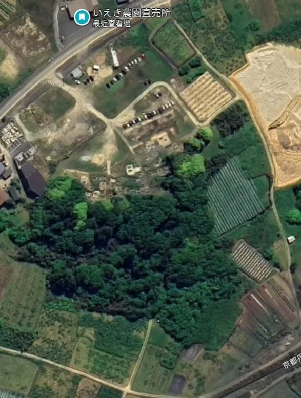

打工換宿：京丹後久美濱灣的牡蠣漁村
第三次換宿，位於京都府……臨日本海的最北端！是我換宿過最荒涼的第二名（不過在當時是第一名），住所距離最近的車站（丹後鐵道的小天橋站）3 公里、超商超市 6 公里。雖然荒涼，但也沒覺得多不方便，Host 會開車載我們去超市採購，我憑藉一台腳踏車也是滿逍遙的。
住在蚵農家：Host あつしさん
在這裡停留三週。Host あつしさん是在久美濱灣養蚵的第三代，住家後門走出去就是海，每戶都有自己的棧橋可以停靠工作船，蚵棚是浮筏式的，位於搭船 5 分鐘的潟湖中央。
他另外還經營一間兩層樓、共三間房的民宿，從他的奶奶開始經營。這個區域有不少這種家庭式民宿，客人大多是在秋冬季來品嘗捕撈解禁的松葉蟹和久美濱灣牡蠣的日本人；由於あつしさん英文講得非常好，換宿期間也有遇到一兩組外國客人投宿。
沒有固定內容的工作
在這裡的換宿工作是每天 9 點開始，中午前會結束，沒有固定內容，常常是現場才知道當天的工作是什麼。比如製作沙袋推進海裡作為船錨、整理蚵棚上鳥蛤（トリガイ）的箱子、篩選牡蠣 baby，民宿打掃、鋪床、送餐（我還驚喜地收到用衛生紙包起來的日幣千元小費，據說給服務生小費在早年很常見／普遍），整理倉庫、廚房冰箱等等。
工作內容很多元，大多也輕鬆，而且可以用自己的節奏慢慢做，甚至整理廚房是我和另一位換宿夥伴、法國人 Samuel 提議要做的（他是麵包師傅，我們對廚房狀況有諸多意見 XD）。
在這裡沒什麼工作感，更多是真的在海邊漁村度假的感覺，想要去過夜旅遊也完全可以。雖然工時短是很關鍵的因素，但很大一部分也要感謝あつしさん，他是一位溫和的人、不吝於回應我們的需求，幾乎和我們一起工作，對待我們也像朋友一樣。
久美濱灣的牡蠣與丹後鳥貝養殖
久美濱灣是一個位於日本海邊的潟湖，其「牡蠣養殖景觀」被選定為京都府文化景觀。主要的養蚵方式，是將附著許多牡蠣幼苗的扇貝殼穿孔、間隔固定在繩索上，利用浮筏垂直懸吊在水下攝食浮游生物。
換宿主人家的做法，則是較為新興的「單體（Single Seed）籃式養殖」：每一顆牡蠣幼苗各自獨立，一起放進豪宅般寬敞的網籃中、懸吊在海裡養殖。彼此不會擠壓生長空間，隨浪碰撞時可以磨掉邊緣的生長紋，使得殼集中增厚、內部能形成深凹槽。雖然產量相對少，但規格統一而且形狀漂亮，專做頂級的生食市場。
我體驗到的部分，是剛買來不久、才三週大的牡蠣 baby 有大有小，幫忙依尺寸分開養殖，避免住在一起，大的搶走食物、小的被餓死。
一般來說，牡蠣都是在春季的時候開始養、冬季的時候收獲。之所以 11 月就開始養，是因為此時水溫較低、有害附著生物幾乎停止繁殖，牡蠣的存活率較高。雖然冬季期間生長速度較慢，但在寒冷與風浪的環境中成長，可以鍛鍊出強健體魄！
另外，這裡養殖牡蠣的浮筏也同時養殖「丹後鳥貝（丹後とり貝）」（在台灣的類似物種極少／不常見），資料說是日本頂級的鳥蛤品牌。一樣是用懸吊方式沉入海中，裝載方式稍微不同：使用類似置物籃的籃子，裡面裝有可以潛居的砂粒，開口則加裝烤肉鐵網般的網蓋防天敵，但好吃的浮游生物進得來～（2025 年夏天過熱導致久美濱灣的丹後鳥貝毀滅式的全軍覆沒🥲）
騎著腳踏車亂晃
在這裡，騎著腳踏車到處亂晃是我最常做的事，樂於到處尋找無人農產直販所、品嘗當地農產品，享受漁村鄉下秋日的風光、日出與日落。遠一點的，也有騎 50 分鐘去久美濱車站，或者搭電車去附近的豐岡市、網野町、峰山町，還去了城崎溫泉、日本三景的天橋立。
其實這些地方最遠不過 30 分鐘的車程，大多也不是什麼景點聖地，但我十分喜歡用一天或一個下午的時間，找幾個不出名的地標、想吃的餐廳店家當目的地，然後享受路途中出其不意的繞路、意料之外的風景。
印象最深的一段腳踏車路
在京丹後印象最深刻的畫面，是一段騎腳踏車的經歷。
首先騎經兩側都是果樹、稍微彎繞的水泥小徑，接著同樣的小徑從水泥變成草地，還留有兩條汽車輾得光禿禿的痕跡，腳踏車輪勉為其難地在顛簸的草地賣力前進。遠方不再是果樹園，而是一小片樹林，樹林路段很短、看得到出口的天空，所以完全沒有害怕的感覺（好吧，可能有 10% 的害怕）。
然而騎不到二十公尺，立刻出現只有三段變速的淑女車無法征服的陡上坡，我下車推了五、六公尺，就看到一個讓人歡天鼓舞的超長下坡（而且還是平滑的水泥地）。我快樂地滑下去，享受突然開闊的視野和吹在臉上的風，接著右側出現至少 30 尊戴著紅色小帽與圍兜的小小地藏菩薩像，如合唱團般排列，以及兩側展開成排整齊的墓碑。
「欸？欸？」我一時不知道該不該煞車，覺得歡快衝刺的自己好像不太禮貌，最後心虛地反覆捏放減速。而斜坡的底端是偌大的柏油產業道路，農場直販所就在斜對面，回歸現實（？）。短短幾分鐘覺得經歷了複雜的心理變化，實在難忘。

謝謝所有的照顧與對話！
延伸閱讀：〈日本打工度假的一年：出發前的準備、支出花費，和不打工的生活方式〉（2026-08-31）
關鍵字京都京丹後久美濱灣小天橋打工換宿牡蠣牡蠣養殖丹後鳥貝
留言
電子郵件不會公開，只用來辨識留言者。第一次留言會先經過審核，之後同一個電子郵件的留言會直接顯示。本留言區以 Cloudflare Turnstile 防止垃圾留言。